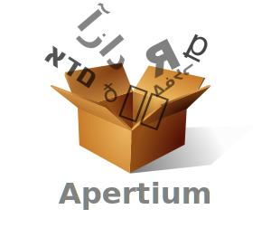
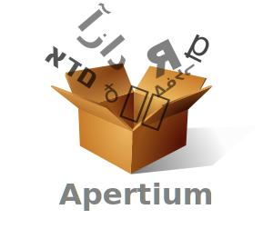

A Free/Open-Source Morphological Transducer for Western Armenian

Hossep Dolatian¹

Daniel Swanson²

Jonathan N. Washington³
- Stony Brook University, USA
- Indiana University, USA
- Swarthmore College, USA

 

Overview
Our talk in a nutshell
We developed a prototype free/open source morphological transducer for Western Armenian
The next ~12 minutes:
- Background
- Western Armenian
- Morphological tranducers
- Implementation and Challenges
- Evaluation
- Future work
- Conclusion
Background
Western Armenian
- IE language
- ~1.6 million speakers
- Spoken primarily in diaspora
- Status varies from viable to endangered, based on location
- Morphological typology
- Primarily suffixing and agglutinative
- Multiple conjugation classes and declension classes
- Has root suppletion and stems
Background
Morphological tranducers
- Twofold function: morphological analysis and generation
սիրեցին ↔ սիրելv tv past pret p3 pl indc
[siɾeʦin] ‘they liked’ ↔ [siɾel] ‘to like’, verb, intransitive, past, preterite, 3rd person, plural, indicative - Implemented as finite state transducers (FST)
- Compiled from hand-coded lexical, morphotactic, and morphophonological generalisations
- Only one development cycle
Background
Morphological tranducers
- many uses in language technology and “downstream” tasks:
- can be repurposed as spell checkers
- may be used in rule-based machine translation pipelines
- Some current uses of this transducer:
- Verb paradigm generator (apertium.github.io/apertium-paradigmatrix)
- Virtually-complete morphology helps find synchronic variation, and
- Useful when writing a reference grammar
- Looking into pedagogical uses
Number of lemmas
| category | entries | tag | |
|---|---|---|---|
Core POS | Noun | 39 006 | |
| Adjective | 18 617 | ||
| Verb | 7 441 | ||
| Adverb | 1 895 | ||
Names | Given name | 4 848 | |
| Surname | 2 052 | ||
| Location name | 1 183 | ||
| Other name | 22 | ||
Function, other | Pronoun | 415 | |
| Adposition | 130 | ||
| Abbreviation | 81 | ||
| Interjection | 49 | ||
| Conjunction | 48 | ||
| Numeral | 41 | ||
| Particle | 9 | ||
| Total | 75 837 |
Recognizes/generates
millions of
inflected forms
millions of
inflected forms
Implementation
- Two-level approach using lexd+HFST:
- “diacritics” in lexical form, like
Plն - used in morpholophonology to select phonologically-conditioned allomorphs
(e.g., of the plural and definite)
orthographic form
ձեռքերէն
/ʦeɾkʰ-eɾ-e-n/‘from the hands’
↕ (twol: phonological mappings)
morphological/lexical form
ձեռք>↕ (lexc: lexicon + morphotactics)
analysis: lemma, POS, grammatical tags
ձեռքChallenges: Lexicon compilations
Problem:
- Many online Armenian dictionaries, but data formats don't allow for intensive use
- Ideal: text files or accessible databases
Problem:
- Many online Armenian dictionaries, but data formats don't allow for intensive use
- Ideal: text files or accessible databases
Challenges: compound plurals
Problem:
- Compound with monosyllabic second stem:
Is plural -եր /-eɾ/ or -ներ /-neɾ/? -
դրամատուներ ↔ դրամատուն
n pl [tʰəɾɑmɑdun-eɾ] ↔ [tʰəɾɑmɑdun] ‘money-houses’ -
մեծատուններ ↔ մեծատուն
n pl [med͡zɑdun-neɾ] ↔ [med͡zɑdun] ‘big-housed’ - Need to manually code based on semantics
Solution:
- Double-checked against EANC to get the right semantics
Challenges: infix punctuation
Problem:
- Punctuation markers are added after vowel of stressed syllable of word
Final stress Pre-schwa stress Irregular stress կապի՞կ կապի՞կը ո՞րքան [ɡɑˈbi?ɡ] [ɡɑˈbi?ɡə] [ˈvo?ɾkʰɑn] ‘monkey?’ ‘the monkey?’ ‘how many?’
Solution:
- Have rules that add infix at end of word, and then “metathesise” (actually: delete and copy)
- Add control characters at location of irregular stress
Evaluation: Coverage
- Naive coverage: the number of forms in a corpus that receive an analysis, regardless of whether or not the analysis is correct (e.g., in context)
| Corpus | Tokens | Coverage |
|---|---|---|
| Newspapers | ~16M | 87.68% |
| Wikipedia | ~2.59M | 88.79% |
| New Testament | ~190K | 90.87% |
Adequate coverage: robust morphology, but many missing stems
Evaluation: Precision & Recall
- created gold standard:
- 1225 valid words of Western Armenian
- randomly selected from Newspaper corpus
- manually annotated output of transducer
- precision: how many of the transducer-provided analyses for the tokens were correct
- recall: how many of the correct analyses were retrieved from the transducer
results:
| Tokens | Precision | Recall |
|---|---|---|
| 1225 | 90.58% | 74.82% |
i.e., most forms returned by the transducer were deemed correct, but many correct analyses were not returned by the transducer (mostly due to low coverage)
Future work
- Expand lexicon (add more lemmas)
- Morphological/syntactic disambiguation
- More language technology applications of transducer? (spell checkers, MT, etc.?)
- Slowly working on incorporating Eastern morphology so that the analyzer is bi-dialectal
- Simple MT between different varieties of Armenian
- Incorporate an orthography-pronunciation convertor
- Honestly, it's open-source, so you can do WHATEVER you want with it!
Conclusion
- Expansion of language technology for Western Armenian
- Robust transducer
- high coverage
- high precision
- moderate recall
- Lots of room for improvement!
- Ready for use in
- language technology applications
- downstream tasks
Շնորհակա՛լ ենք! / Thank you!
- Fork at github.com/apertium/apertium-hyw
- Try out at beta.apertium.org